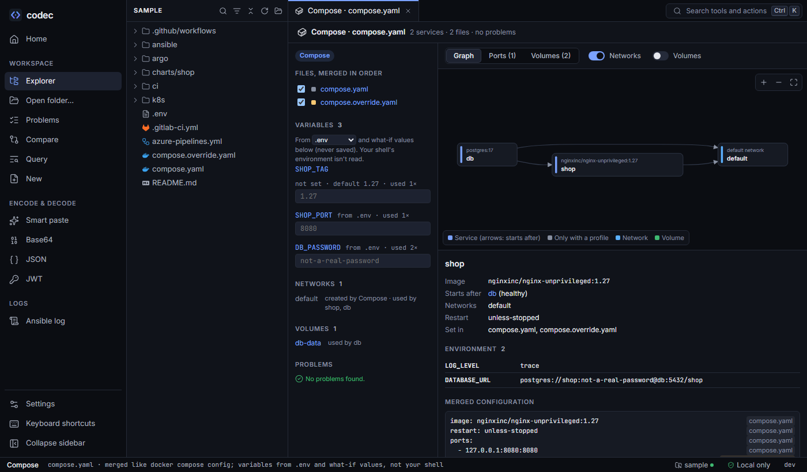

Compose
The Compose view shows a project the way docker compose config sees it — the override (or any files you pick) merged with the Compose rules, variables filled in — and says for every line which file set it.

compose.yaml plus compose.override.yaml, variables from .env, and shop starting after a healthy db.Files, merged in order#
Open Compose on any Compose file. codec picks the files Docker Compose would use by default — compose.yaml and compose.override.yaml (or the docker-compose*.yml names) — and lists the other Compose files in the folder so you can add them as layers, the way -f a.yaml -f b.yaml would. Untick a file to see the project without it.
Merging follows the Compose specification:
- Maps merge key by key; scalars in later files replace earlier ones.
ports,volumes,exposeand similar lists are merged by their target;command,entrypointandhealthcheck.testare replaced.- List-form
environmentandlabelsmerge by name. !resetremoves a value from earlier files,!overridereplaces instead of merging.extends(in the same file or another) and top-levelincludeare followed.
The merged configuration of each service is annotated with the file and line that set each value.
Variables#
${VAR}, ${VAR:-default}, ${VAR:?error} and friends are filled in from .env (or another env file you choose) and from what-if values you type in the view. Each variable says where its value came from and how often it is used. Your shell's environment is deliberately not read — the result doesn't depend on who runs codec — and what-if values are never saved.
Unset variables without a default, and :? variables that would fail, are problems.
Services, ports and volumes#
- Graph — services with arrows for start order (
depends_on, with the condition), optionally networks and volumes. Services behind a profile are marked. - Ports — every published port: host address, host port, container port, protocol and the file that set it. Two services publishing the same host port are flagged.
- Volumes — named volumes, binds and tmpfs mounts, who uses them and whether they are read-only.
Checks#
Unknown services in depends_on, links and network_mode; networks, volumes, secrets and configs used but not declared; dependency loops; services with neither image nor build; missing env files, extends and include targets (and loops between them); unset and required variables; host port clashes. In the editor: services in the outline, hover and go to definition for ${VAR} (to .env), services (including extends into another file), networks and volumes.
From the command line#
codec compose services # compose.yaml + its override, in this folder
shop · nginxinc/nginx-unprivileged:1.27
after db (healthy)
port 127.0.0.1:8080 → 8080/tcp (compose.yaml)
bind ./site → /usr/share/nginx/html (read-only)
db · postgres:17
volume db-data → /var/lib/postgresql/data
variables
SHOP_TAG 1.27 (default)
SHOP_PORT 8080 (.env)
codec compose config # merged services, which file set each line
shop:
image: nginxinc/nginx-unprivileged:1.27 # ← compose.yaml:3
environment: # ← compose.override.yaml:4
LOG_LEVEL: trace # ← compose.override.yaml:5
codec compose services compose.yaml compose.prod.yaml -e TAG=1.2 --env-file prod.env --json